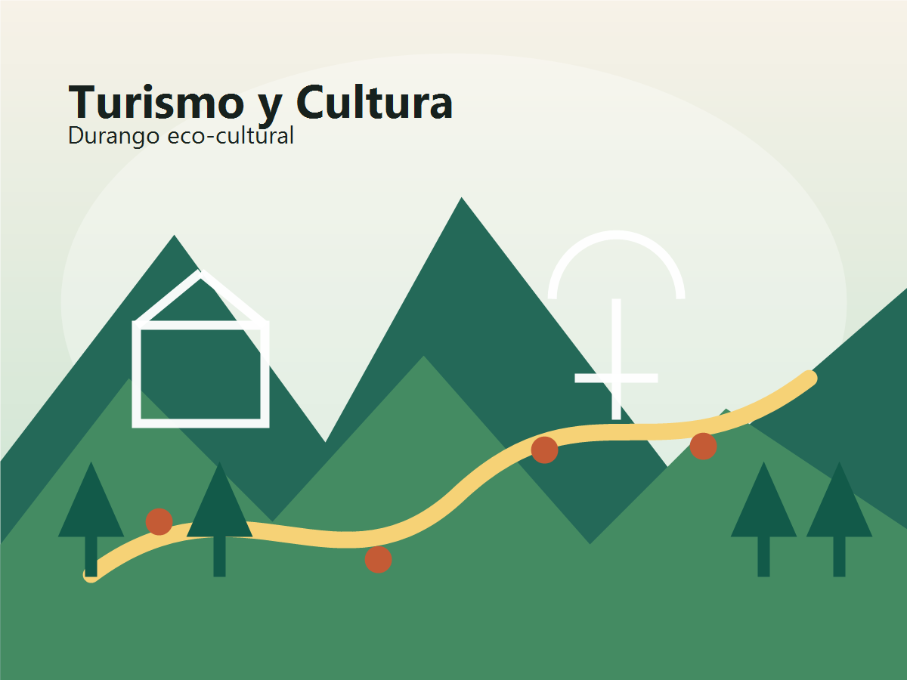

Durango eco-cultural
Turismo y Cultura
Cada visita camina suave, cada cultura se escucha.

Acceso
Visitas suaves para todas las personas
Datos
Huella y flujo en tiempo real
Vista Turista/Visitante
Explora Durango con rutas culturales claras y suaves
Encuentra historias, rutas recomendadas, puntos accesibles y señales de sostenibilidad pensadas para disfrutar cada visita con contexto.
Vista Comerciante
Administra tu presencia cultural y conecta con visitantes
Publica información de tu negocio, presenta productos locales y revisa señales útiles para integrarte a las rutas comunitarias.
Situación actual y problema
Durango se encuentra en una encrucijada cultural, digital y ambiental
El turismo cultural de Durango vive una tensión clara: las Rutas Comunitarias Eco-Culturales han tenido un inicio prometedor, alcanzando tres destinos en su fase piloto de 2025, pero mucha memoria cultural valiosa sigue fuera del alcance digital. Mientras un turista alza su teléfono frente a un edificio histórico, una persona en silla de ruedas quizá no pueda ni siquiera entrar. Y mientras se promueven rutas ecológicas, la huella de carbono del propio viaje erosiona silenciosamente los mismos bosques y cañones que se quieren proteger.
Participación cultural desigual
Las personas con discapacidad, los adultos mayores y quienes tienen bajas competencias digitales quedan prácticamente excluidos de las experiencias inmersivas. Las historias en lenguas originarias a menudo no llegan a todos por falta de adaptación a lengua de señas o a formatos de audio accesibles.
Costo ecológico del crecimiento turístico
Aunque las rutas comunitarias llevan la etiqueta eco, carecen de cuantificación en tiempo real y de retroalimentación sobre visitantes, transporte y residuos. La sostenibilidad se queda demasiadas veces en una intención sin datos que la respalden.
Poder comunitario insuficiente
El diseño y la distribución de beneficios turísticos siguen dependiendo en gran medida de plataformas externas. Las comunidades difícilmente gestionan sus narrativas culturales y su ética ambiental con herramientas tecnológicas inclusivas.
Contradicciones centrales actuales
El reto no es solo mostrar cultura, sino hacerla accesible, medible y comunitaria
La propuesta parte de tres tensiones principales: quién puede participar, cómo se mide el costo ecológico y quién controla la narrativa cultural.
Participación cultural desigual
Personas con discapacidad, adultos mayores y quienes tienen bajas competencias digitales quedan excluidos de las experiencias inmersivas. Las historias en lenguas originarias no llegan a todos por falta de adaptación a lengua de señas o formatos de audio accesibles.
Costo ecológico del crecimiento turístico
Aunque las rutas comunitarias llevan la etiqueta "eco", carecen de cuantificación en tiempo real y de retroalimentación sobre el flujo de visitantes, los medios de transporte y los residuos generados. La sostenibilidad se queda en una declaración de intenciones.
Expresión comunitaria insuficiente
El diseño y la distribución de beneficios turísticos dependen en gran medida de plataformas externas. Las comunidades no pueden gestionar de forma autónoma sus narrativas culturales ni su ética ambiental mediante herramientas inclusivas.
Solución propuesta
Una plataforma para conectar rutas, comunidad y sostenibilidad
La solución convierte el diagnóstico en herramientas concretas para visitantes, comerciantes y comunidades.
Navegación AR Inclusiva y Carbono-Consciente
Al apuntar la cámara hacia un edificio del Centro Histórico de Durango, la app superpone visualizaciones históricas. Para personas ciegas: narración con audio espacial y retroalimentación háptica. Para personas sordas: avatar virtual de intérprete de lengua de señas en tiempo real. Incluye rastreador personal de huella de carbono basado en la ruta elegida.
Plataforma P2P de Turismo Comunitario con Trazabilidad Web3
Cada ruta comunitaria se tokeniza. Las reservas se registran en blockchain (Polygon PoS); los pagos se distribuyen automáticamente mediante smart contracts entre guías, cocineras tradicionales y fondos de conservación. Interfaz compatible con lectores de pantalla. Sistema de créditos comunitarios para personas sin cuenta bancaria.
Archivo digital 2.0
Memoria cultural organizada en formatos accesibles, multilingües y fáciles de actualizar.
Gemelo de sostenibilidad
Seguimiento de flujo, residuos, transporte e impacto ambiental para tomar mejores decisiones.
Stack tecnológico
Seis capas tecnológicas para una experiencia medible
AR multimodal
Capas visuales, audio y contenidos adaptados a cada recorrido.
Web3
Registro confiable de contribuciones, beneficios y trazabilidad comunitaria.
IoT
Sensores y registros ligeros para flujo de visitantes y puntos de interés.
IA-NLP
Traducción, síntesis y adaptación de narrativas culturales.
Datos abiertos
Indicadores consultables para turismo, cultura y sostenibilidad.
Monitoreo comunitario
Participación local para validar datos, historias y criterios ambientales.
Métricas clave
Indicadores para tomar decisiones con datos
Impacto comparativo
Antes vs Después
El proyecto transforma una visita fragmentada en una experiencia cultural accesible, comunitaria y medible.
Equipo
Perfiles necesarios para desarrollar la propuesta
Diseño inclusivo
Experiencias claras, accesibles y sensibles al contexto cultural.
Desarrollo web
Frontend, datos y flujos interactivos para usuarios y comerciantes.
Gestión cultural
Validación de relatos, comunidades y patrimonio local.
Sostenibilidad
Métricas ambientales, turismo responsable y monitoreo comunitario.
Poder comunitario
La tecnología debe servir a quienes sostienen la cultura
El turismo cultural necesita herramientas inclusivas para que las propias comunidades gestionen sus narrativas, midan su ética ambiental y participen en la distribución de beneficios sin depender por completo de plataformas externas.